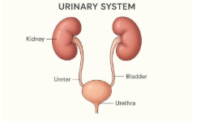
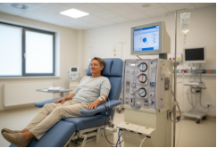
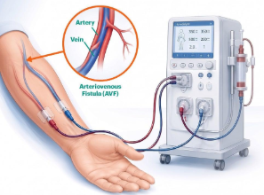
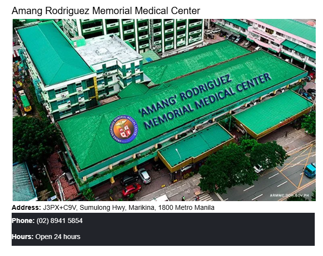
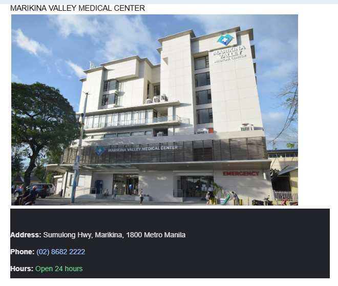

Quality and Patient Safety
Patient-centered care, safety awareness, and kidney health education.
WELCOME TO DIACORE DIALYSIS CENTER
Your Partner in Compassionate Kidney Care
DiaCore Dialysis Center is a healthcare facility concept dedicated to supporting individuals living with kidney disease through compassionate, safe, and patient-centered care. We aim to be a trusted resource for patients and families, while promoting collaboration with healthcare professionals in the delivery of quality kidney care.
Guided by compassion, integrity, respect, and patient safety, we strive to create a supportive environment where every patient is treated with dignity and understanding throughout their dialysis journey.
WHY CHOOSE US
Compassionate care, patient safety, and comfort at every step of your dialysis journey.
Patient-centered care, safety awareness, and kidney health education.
A welcoming environment designed around patient comfort and support.
Clear service information and guidance on applicable healthcare benefits.
Compassion, dignity, respect, and support throughout the dialysis journey.
LEARN ABOUT YOUR CARE
Helpful information to support your kidney health and dialysis journey.

Learn how your kidneys work, what kidney disease is, and why treatment may be needed.

Discover how dialysis helps remove waste and excess fluid from the blood.
Understand sodium, potassium, phosphorus, and fluid guidance for kidney health.

Learn how to protect your dialysis access and recognize signs of infection.
Learn why prescribed medicines and following your treatment plan matter.
Explore daily health monitoring, preparing for dialysis, and when to seek medical help.
FIND A DIALYSIS CENTER
DIALYSIS CENTER
No matching location. Search Sumulong.
ABOUT US
Dialysis is a treatment that helps remove waste and extra fluid from the blood when the kidneys can no longer do so effectively. It supports the body's balance of fluids and minerals.
Hemodialysis filters blood through a machine, while peritoneal dialysis uses the lining of the abdomen. A nephrologist helps determine the appropriate care plan for each patient.
For general information only. Follow your healthcare provider's advice for personal care.ACCOUNT ACCESS
Choose your account type to continue.
Account and Privacy Notice For your security and privacy, please use your own account and never share your login credentials with anyone you do not know or trust. Your account information, medical records, and other personal data are securely stored and protected within this system. Please keep your account credentials confidential to help prevent unauthorized access.
DIACORE SERVICES
01 / 04
Patients visit the center 2 to 3 times a week for a machine to filter waste and fluid from their blood.
Source: Mayo Clinic

ABOUT US
ABOUT DIACORE
Your Partner in Compassionate Kidney Care
DiaCore Dialysis Center is a healthcare facility concept dedicated to supporting individuals living with kidney disease through compassionate, safe, and patient-centered care. We aim to be a trusted resource for patients and families, while promoting collaboration with healthcare professionals in the delivery of quality kidney care.
Guided by compassion, integrity, respect, and patient safety, we strive to create a supportive environment where every patient is treated with dignity and understanding throughout their dialysis journey.

Address: J3PX+C9V, Sumulong Hwy, Marikina, 1800 Metro Manila
Phone: (02) 8941 5854
Hours: Open 24 hours

DiaCore Dialysis Center is committed to providing safe, accessible, and patient-centered dialysis care through competent healthcare professionals, modern equipment, and compassionate service. We aim to support patients and their families throughout their treatment journey while promoting health, dignity, and well-being.
To be a trusted dialysis center that provides compassionate, safe, and quality renal care, helping patients achieve a healthier and better quality of life.
PATIENT CARE
At DiaCore Dialysis Center, we believe that every patient deserves quality care, compassion, and respect. We are committed to supporting individuals living with kidney disease by promoting patient safety, comfort, and well-being throughout their dialysis journey. Through patient education, clear communication, and a patient-centered approach, we aim to help patients and their families better understand kidney health, dialysis treatment, and proper nutrition so they can make informed decisions about their care.
At DiaCore Dialysis Center, we believe that quality dialysis care goes beyond treatment. We aim to provide a safe, comfortable, and supportive environment where patients feel valued and cared for throughout their dialysis journey.
At DiaCore Dialysis Center, our goal is to make every patient's healthcare experience more comfortable, informed, and supportive. We strive to uphold compassion, patient safety, respect, integrity, excellence, and teamwork in every aspect of our care.
ABOUT OUR TEAM

PATIENT EDUCATION
01 · KIDNEY HEALTH
The kidneys are two bean-shaped organs that play an important role in maintaining the body's overall health. They filter waste products and excess fluid from the blood, help regulate blood pressure, maintain electrolyte balance, and support red blood cell production.
Kidney disease occurs when the kidneys become damaged and cannot function properly. This may cause waste products and excess fluid to build up in the body. Chronic kidney disease (CKD) often develops gradually and may be associated with conditions such as diabetes, high blood pressure, and other medical problems.
Some people with early kidney disease may not experience noticeable symptoms, which is why regular medical checkups are important.
Treatment depends on the cause and stage of the disease. Management may include controlling blood pressure and blood sugar, taking prescribed medications, following an individualized nutrition plan, and attending regular medical appointments. In advanced kidney disease, dialysis or a kidney transplant may be considered.
Early detection and appropriate medical care can help manage kidney disease. Patients should consult a qualified healthcare professional for proper evaluation and treatment.
02 · TREATMENT
Dialysis is a medical treatment that helps remove waste products and excess fluid from the blood when the kidneys can no longer perform these functions adequately. It also helps maintain the balance of certain minerals and electrolytes in the body.
Dialysis does not completely replace all the functions of healthy kidneys, but it can help patients manage kidney failure and maintain their health.
Hemodialysis uses a dialysis machine and a special filter called a dialyzer to remove waste products and excess fluid from the blood. Blood travels through the dialysis circuit and is returned to the body after filtering. Treatment is performed according to the schedule prescribed by the healthcare team.
Peritoneal dialysis uses the lining of the abdomen, called the peritoneum, as a natural filtering membrane. A special dialysis solution is introduced into the abdominal cavity through a catheter, allowing waste products and excess fluid to move into the solution before it is drained.
Patients receiving dialysis should follow their prescribed treatment schedule, attend appointments, take medications as directed, and follow their individualized diet and fluid recommendations.
Never skip or shorten a dialysis session without consulting your healthcare team. If you experience symptoms during or after treatment, inform your healthcare provider promptly.
03 · NUTRITION
Nutrition plays an important role in managing kidney disease. The right food choices can help patients maintain energy, support overall health, and manage the levels of fluid, minerals, and waste products in the body.
However, there is no single kidney diet that is suitable for everyone. Dietary needs vary depending on kidney function, dialysis treatment, laboratory results, medications, and other medical conditions.
Do not eliminate entire food groups or severely restrict your diet without professional guidance. Your renal dietitian can help you choose foods that meet your individual needs.
04 · TREATMENT SAFETY
Dialysis access provides a way for blood to travel between the patient's body and the dialysis machine during hemodialysis. Proper access care is essential for maintaining effective treatment and reducing the risk of infection and other complications.
The healthcare team will determine the appropriate access based on the patient's condition and treatment needs.
Contact your healthcare team promptly if you notice signs of infection, a change in the usual thrill of your fistula or graft, or problems with your access. Heavy bleeding or bleeding that does not stop requires emergency medical attention.
Never attempt to repair, manipulate, or remove dialysis access equipment yourself. Proper care helps protect your access and supports safe treatment.
05 · MEDICATION SAFETY
Medication management is an important part of caring for people with kidney disease. Depending on their condition, patients may be prescribed medicines to help control blood pressure, manage diabetes, support red blood cell production, or regulate mineral and electrolyte levels.
Some medications may require dose adjustments in people with reduced kidney function. Dialysis can also affect how certain medicines are removed from the body.
These are examples only. Not every patient needs all these medications.
Always tell your dialysis team about all medications you take. Your healthcare provider can determine whether a medicine or its dosage needs adjustment based on your kidney function and dialysis treatment.
06 · EVERYDAY WELL-BEING
Daily self-care helps dialysis patients participate actively in managing their health. Following the treatment plan, monitoring changes in the body, maintaining appropriate nutrition, and communicating with healthcare professionals can support overall well-being.
Self-care does not replace professional medical treatment. Instead, it works together with the care provided by the healthcare team.
Seek medical advice for new or worsening swelling, fever, signs of access infection, unusual weakness, or other concerning changes. Severe shortness of breath, chest pain, fainting, or heavy bleeding requires emergency medical attention.
Every patient's condition is different. Follow your individualized dialysis care plan and ask your healthcare team whenever you are unsure about symptoms, food choices, fluid intake, medications, or daily activities.
CONTACT
Fill out the form and our admin team will receive your message.